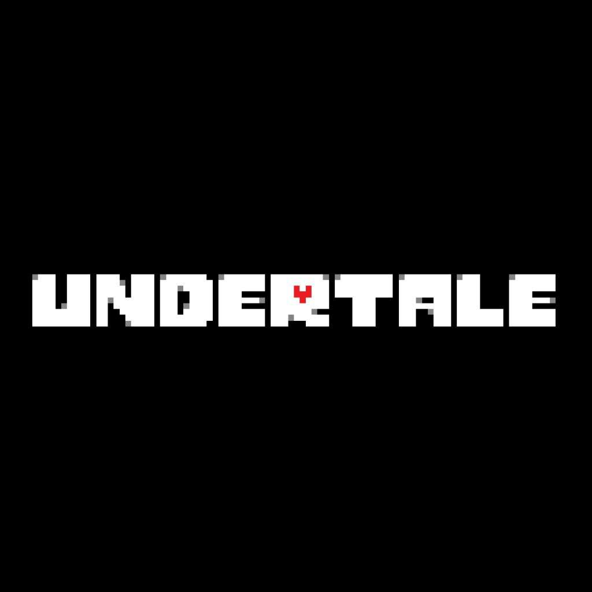

Undertale |
||
|---|---|---|
|  | Sinopsis: Hace muchos años, dos razas reinaban a la par sobre la superficie: los humanos y los monstruos. Un día estalló una guerra entre ambos, que se saldó con la victoria aplastante de los humanos. Los monstruos fueron expulsados de la superficie y exiliados al subsuelo, siendo encerrados por una barrera mágica impuesta por los humanos. Años más tarde, surgen leyendas que cuentan que todo aquel que sube al monte Ebott jamás vuelve. La historia de Undertale comienza cuando el/la personaje protagonista, Frisk, tras escalar el Monte Ebott, el lugar donde 6 humanos habían desaparecido, cae por un abismo y se despierta en las Ruinas, dentro del subsuelo. |
Desarrollador:Toby Fox Plataformas: PC,Nintendo Switch Año: 2015 Duracion:20 horas aprox Pais:Estados Unidos |
Criticas Profesionales:Axel CarreraUn cuento inolvidable sobre el valor de la amistad, el perdón y las consecuencias de nuestros actos, narrado con un sentido del humor brillante. No es el mejor juego de la historia, pero no encontraréis otro con más ALMA. |
Trailer |
Obtener:AlquilarComprar |
Registrate/Iniciar Sesion